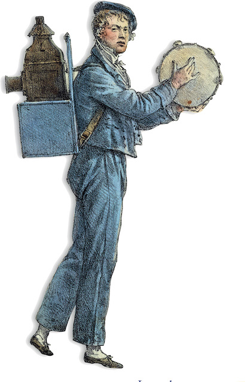
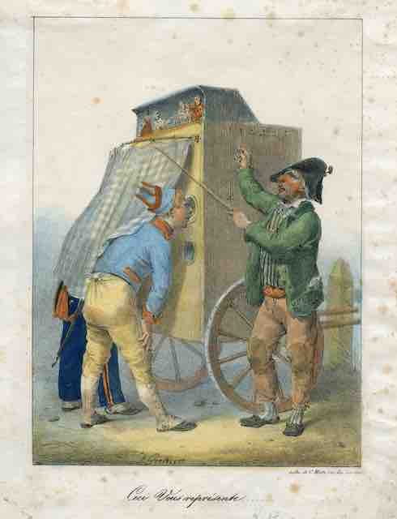
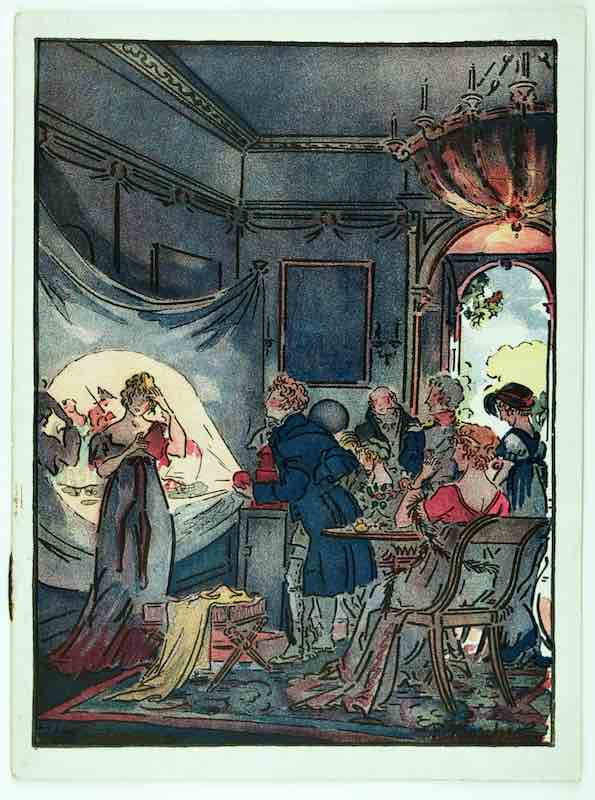

Les spectacles de curiosités ont longtemps fait partie du quotidien de nos ancêtres. Montreurs d’animaux, tours de physique et de mécanique, lanternes magiques, ventriloques, jongleurs et équilibristes sur pied ou à cheval, aérostats, marionnettes et cires sont, aux XVIIIe et XIXe siècles, l’âme de petits métiers ambulants qui animent les places publiques, les rues, les auberges, les cabarets, les loges des foires, les cirques naissants, voire les maisons particulières.
A des prix accessibles à tous, ou à la plupart des contemporains, d’abord ceux des villes, ces numéros les transportent vers un monde de prouesses, vers des ailleurs inaccessibles, aux confins de l’humanité – celle qui fraye avec l’animalité, la monstruosité, a du mal à accepter sa diversité. Entre rêve d’ailleurs et réalités déformées, ils créent un horizon d’attente et un espace mental particuliers ; ils anticipent les premières heures du cinématographe, les Enfants du Paradis.
Surveillés de près par la police, ils proposent également, tant dans leurs mises en scène que dans les rares mots des bateleurs, un ordre moral qui sert aussi bien la mémoire immédiate des régimes politiques, la reconquête catholique des esprits, qu’une approximative vulgarisation scientifique ou artistique (celle que favorisent les transparents de plus en plus précis et inspirés des lanternes). Ils mêlent sans cesse les références culturelles, faisant voisiner Robespierre et le bourreau de Londres, Napoléon et les brigands napolitains, les vierges et les rires païens si la sidération, l’accroche, le fait divers l’exigent. Ils flirtent avec les frontières de l’acceptable, au risque de sulfureuses réputations pour des saltimbanques qui en tirent autant d’arguments publicitaires, ou subissent suspicion et rejet.

Longtemps victimes d’une législation favorable aux théâtres municipaux, aux arrondissements théâtraux créés par le Premier Empire et actifs jusqu’en 1864, les curiosités y sont assujetties : paiement d’une taxe aux directeurs privilégiés des scènes provinciales, interdiction de doubler le répertoire dramatique, jeu limité à la pantomime, etc.
Les frontières avec les tréteaux officiels demeurent cependant des plus poreuses, et ce dans les deux sens : les forains n’oublient pas d’adapter œuvres pies et pièces classiques dans des jeux de marionnettes qui ont fait les belles heures du boulevard parisien du Temple ; les salles municipales savent les profits décuplés que peuvent leur apporter les équilibristes, les prestidigitateurs ou les cavaliers d’un soir si la programmation saisonnière s’avère par trop morose ; de la rue aux coulisses, l’on échange et amalgame les « trucs » du métier.
Sans prétendre au renom international des Franconi, des réputations se créent, des circuits s’imposent dans ce monde des baladins de plus en plus porté par les annonces dans la presse locale, une audience à laquelle ne pouvaient prétendre les affiches manuscrites ou imprimées à grands frais. La volonté des entrepreneurs de s’assurer le public le plus large, les deux sexes, la ronde des générations, gages d’une survie financière et d’une spécialisation qui les éloigne d’une activité d’appoint, va de pair avec cette consécration journalistique. Les moments d’encanaillement, d’étonnement, de bonheur partagé, les voyages imaginaires et la violence des corps dressés ou enfermés, que tous sont invités à observer, à partager, gagnent en honorabilité à force d’habitude, de transcriptions littéraires et graphiques.

Il était naturel pour le Centre d’Histoire « Espaces et Cultures » (CHEC), de porter ces efforts de recherche vers ces mondes largement oubliés de l’historiographie universitaire, de leur dédier une équipe pour l’heure constituée de Philippe Bourdin, Cyril Triolaire, Roger Gonin et Aurélia Vasile. Dans la cadre de contrats ANR successifs, le CHEC a en effet développé la base de données THEREPSICORE sur les théâtres de province sous la Révolution et l’Empire (salles, personnels, circuits, programmations), la base MUSEFREM sur les musiciens et les musiques d’Eglise à la fin du XVIIIe siècle, a participé au programme CIRESFi porté par l’Université de Nantes (et dirigé par Françoise Rubellin) sur le théâtre de la foire et le théâtre italien dans la France des XVIIe et XVIIIe siècles.
Histoire culturelle, histoire sociale, histoire politique s’entrecroisent en permanence au fil de ces projets. Les questions des publics, de l’adaptation, de l’acculturation sont sous-jacentes, celle de la place des goûts populaires prégnante. C’est dans l’espoir d’aller au plus près de celle-ci que nous avons suivi les montreurs de curiosités, à travers les sources de police, les passeports, les annonces et affiches, toutes sources à partir desquelles nous proposons une première approche prosopographique.
Curieux et érudits y chercheront des identités oubliées, des cheminements privilégiés, seul, en famille ou en compagnie, des types d’activités artistiques qui, souvent s’additionnent, un même individu se démultipliant pour assurer les moyens de sa survie. Certains auront à cœur d’apporter leur propre pierre à cet édifice, toujours en construction, comme les rêves du facteur Cheval ou de Gaudi ; nous les en remercions par avance.